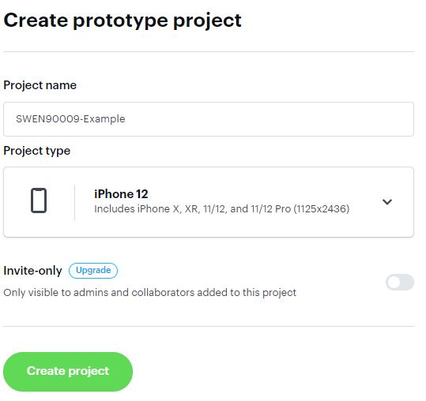
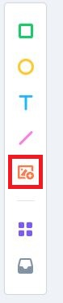
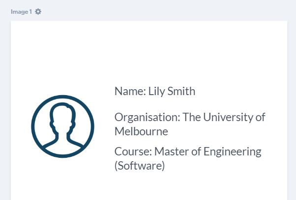
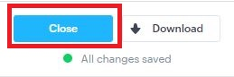
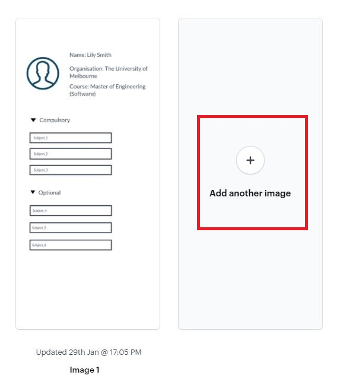
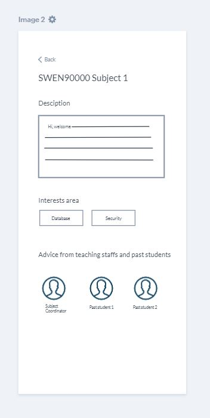
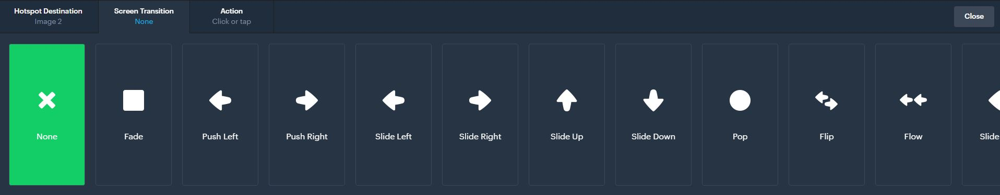

Appendix E: Marvel Tutorial
Contents
Appendix E: Marvel Tutorial¶
This tutorial shows you how you can use Marvel to help you create your paper prototype.
Before You Start Prototyping¶
Before you start prototyping, let us remind ourselves - why are we creating paper prototypes? What’s the purpose again?
The purpose of creating paper prototypes is to design the user interfaces of the system-to-be so that you can run usability test with end-users and clients to make sure it is fit for purpose. If you discover any problem during usability testing, you can go back and modify your design. By the end of the process, you have a validated prototype before you start coding. Improving design on your prototype is probably going to be much less expansive than on your code.
Now that you are clear on the purpose behind the task, we would like to provide some advice to help you:
No.1: Completeness of Scenarios¶
During your usability test, you will have tasks for your users/clients to perform. It’s really important to make sure that these scenarios in your paper prototype are complete. What does that mean? Let me give you an example.
Imagine that you have a scenario where a user needs to book a hotel room. On the interface, you have an option to confirm or cancel. You made sure that the “Confirm” button is clickable, and you prepared the transition to the next page. But the “Cancel” button is non-clickable. During the usability test, your client clicks “Cancel” and nothing happens.
The example above is an incomplete scenario. It’s better to have 4 - 5 complete scenarios than creating 100 pages but a lot of buttons are non-clickable. Remember - you want to run usability test and observe your users interacting with the system to improve your design. Half-completed scenarios won’t help you with that - it will even create confusions for users/clients. If you are designing a large system and there are a LOT of user stories to cover, we advise you to:
Ask yourself: what are the most important things that users must be able to accomplish on the application? What user stories MUST be tested?
Select 4 - 5 user stories or scenarios from your list, and start prototyping. Make sure they are complete.
No.2: Don’t Give the Answer Away¶
Let’s use our booking hotel room example again. Make sure you don’t give away clues or describe the steps to your users. Don’t say “First you would login, then you would click the Find Destination button, then you would browse all the hotels available, then…” the instructions that you give will prevent you from discovering design flaws. Instead, set up a little scenario for your users, provide them with context and observe how they complete the activity. For example, a better task would be:
You are planning a trip with your family to Sydney from 24th December - 2nd January. You want to book a hotel room. Visit our site and see what’s on offer.
No.3: Remember This Is a Low-Fidelity Prototype¶
Low-fidelity prototype shows only major navigation and content elements. You don’t need to include details such as the colour scheme, images, styling, or meaningful content.
Want Some More Resources?¶
Check out some tutorials and resources for running usability tests in the More Resources section.
Tips For Marvel¶
Here are some tips for using Marvel to create your prototype:
Make sure that you hide hotspot hints (instructions) when testing your prototype with end-users/clients. Remember, one of the goals of paper prototype is to test the usability of your design. If you don’t hide hotspot hints, end-users/clients will be given clues to know where to click.
Even with 4 - 5 scenarios, you might end up creating many of screens for your paper prototype. You can organise your screens into sections on Marvel. Checkout this series of short tutorials on sections.
Initial Set Up¶
Follow this link to create an Marvel account.
During your sign up process, Marvel might ask you to create your first Marvel Whiteboard. You can choose “Skip for now” to ignore this option, because what you will be needing is NOT a whiteboard.

If you want to invite your team members to your workspace, keep in mind that for a free account, you can have 6 people in TOTAL (including yourself!) to edit the workspace projects.
Using a free account, you only get ONE editable project. Keep that in mind before you create a second project.
Create Your First Project¶
After you have signed up, you can “Create project”.

There will be options to choose from - select the “Prototype” option.

Then, enter the project name.
Do you know if your client wants a web-application, or a mobile app? If it is a web-application, will the users mostly access this web-app via their phone, or laptop/computer? Select a device accordingly. In this tutorial, we will go with iPhone 12. 
Create project.
Prototyping¶
Once you have created your project, you can start prototyping! There are two stages to create your paper prototype:
Design your screens - what are they going to look like?
Design the interactions and transitions between your screens.
Marvel offers three main ways to design your screens:
Create your own design on Marvel.
If you have got some design already, you can upload your design in Marvel.
Use the template that Marvel provides.

Prototyping - An Example¶
Let’s walk through an example. Let’s say you are designing an application for universities that will help university students decide which subjects to take in the future. Your clients have told you that they want the application to be a mobile app.
Reminder
Your paper prototype is an early draft of your design - it should be rapidly designed, simulated and tested with users. Please be careful with the level of details you put into it. It needs to show major navigation and major content elements. It does NOT need to show colours, images or meaningful contents.
Create your first project according to the create your first project section.
Let’s design the first page - Home page.
Click on “Start designing”

Firstly, our Home page can show some basic information about the user who has logged in. Let’s create a profile image icon. Select the icon options on the toolbar.
Let’s pick the 2nd one, and add it to our design.

Secondly, we can add some basic information about the user. Select the text option, and add text in our design.

For now, our page looks like:
Next, we decide that some subjects should be listed. They should be categorised into “Compulsory” (student must complete this subject as part of the course) and “Optional”. We can add some rectangles to represent subjects:

Our page looks like this now:

We are done with the design. Let’s close this page.

Let’s design the next page - a subject’s page.
Let’s create a new image.
According to our clients’ requirements, a subject’s page should have the subject’s name, a description, area of interests it relates to, advice from teaching staffs and past students, and a button to go back to the home page. The outcome might look like:

Let’s say we are done with our design our pages (for now). Let’s design the interactions between the two pages we created.
Hover your mouse over the Home page, click “Prototype” to add interactions.

Click and drag to draw a hotspot (hotspot is an interactive area to enable users move between screens)

Next, select the next screen you want to transition to.

Next, select the transition type. 
Next, select the action that triggers the transition (i.e. is it a click, tap, or?)

Let’s say we are done with designing the interactions between screens. Select the “Play” button in the top right corner to watch the transition you just created.

To share paper prototype with your client so that you can run usability test with them, click “Share”, copy the link, and send it with them.

We hope that this simple example has helped you getting started with Marvel.